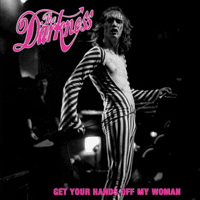
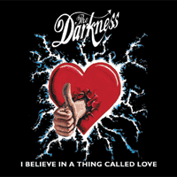
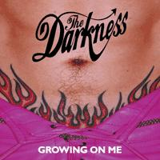

They are the saviours of good
old fashioned Rock 'n' Roll. They're British. They're New. And They're
Lush!!!
Fantastic style of Rock mixed
with the tongue in cheek vocals (synonymous with
the likes of Queen and AC/DC) means The
Darkness are one of the freshest bands to hit the charts in 20
years!
A week after the release of their album (7th April), it
was being sold at £8.99. Before
the end of August it's number one in the charts and £12.99!
They seem to becoming more and more popular thoughout the summer and
most people have heard of them.
At a recent social event I went
to organised by the school, the DJ played four
of their songs throughout the evening - I didn't hear four songs of
any other band played!
Amazon.co.uk gave a good review
of The Darkness:
"The Darkness'sPermission to Land is an entertaining and unabashed return to
the pomp-rock of a bygone age, when mullet-clad dinosaurs travelled
the stadiums of the world--back before Nirvana and their lank-haired
ilk swept the world in an unstoppable
tide of flannel shirts and overwrought earnestness. So, while their
peers were drawing inspiration from the Pixies, Sonic Youth
and the Stone Roses, the four guys in the Darkness were busy
studying their Queen and Def Leppard albums and learning
how to rock.
It's this
unapologetic rock & roll spirit that makes Permission to Land
a stand-out debut album (well, for 2003 at least--sometimes, you've
gotta look back in order to move forward). There's no bedsit electronica,
acoustic surrealism or garage rock to be found here; instead, this is
music as pure entertainment, best suited to a wall of Marshall amps,
guitars tuned up to 11 and a pyrotechnic display visible from orbit.
Singles "I Believe in a Thing Called
Love", "Growing on Me" and "Get Your Hands off My Woman"
are all typical of what's on offer here: huge guitar riffs, crashing
drums and the over-the-top falsetto vocals of singer Justin Hawkins.
But they're not the only stand-outs here: "Black Shuck", "Givin'
Up" and "Love on the Rocks (with No Ice)" are all anthemic
fist-raisers, packed with sing-along choruses and guitarist Dan Hawkins'
ultra-infectious hooks. Original? No. Ironic? Maybe. Fun? Oh yes. A
lesser band would have approached the spandex-clad rock of Permission
to Land with tongues firmly in cheeks, and it's to the Darkness's
eternal credit that they manage to inject the whole thing with enough
sincerity to carry it off. And why shouldn't they? After all, Bon
Jovi always looked like they were having a heck of a lot more fun
than Nirvana anyway. --Robert Burrow "
In a town in the east
The parishioners were visited upon
By a curious beast
And his eyes numbered but one and shone like the sun
And a glance beckoned the immediate loss
Of a cherished one
It was the coming of the
(Black Shuck) Black Shuck
(Black Shuck) Black Shuck
(Black Shuck) That dog don't give a fuck
Black Shuck
(Black Shuck) Black Shuck
(Black Shuck) Black Shuck
(Black Shuck) That dog don't give a fuck
Flames licked round the sacred spire
And the congregation's last line of defence
Was engulfed in fire
As the flaming priest stepped into the firing line
On the business end of despair
God, he took his own life
During the coming of the
(Black Shuck) Black Shuck
(Black Shuck) Black Shuck
(Black Shuck) That dog don't give a fuck
Black Shuck
(Black Shuck) Black Shuck
(Black Shuck) Black Shuck
(Black Shuck) That dog don't give a fuck
A nimbus of blue light surrounds a crimson paw
As he takes another fatal swipe
At the Blytheburgh Church Door
(Black Shuck) Black Shuck
(Black Shuck) Black Shuck
(Black Shuck) That dog don't give a fuck
Black Shuck
(Black Shuck) Black Shuck
(Black Shuck) Black Shuck
(Black Shuck) That dog don't give a fuck
(Black Shuck) Black Shuck
(Black Shuck) Black Shuck
(Black Shuck) That dog don't give a fuck
Black Shuck
(Black Shuck) Black Shuck
(Black Shuck) Black Shuck
(Black Shuck) That dog don't give a fuck
You are drunk and surly
In Latino lover mode
We all know what's on your agenda
We've broken the code
I've got no right to lay claim to her frame
She's not my possession
You cunt.
Get your hands off my woman motherfucker
Get your hands off my woman motherfucker
Octoped, you've got six hands too many
And you can't keep them to yourself
You're too fat and too old to marry
So they left you on the shelf
I've got no right to lay claim to her frame
But you soiled my obsession
You cunt.
Get your hands off my woman motherfucker
Get your hands off my woman motherfucker
Get your hands off my woman motherfucker
Get your hands off my woman motherfucker
Ow!
Get your hands off my woman motherfucker
Get your hands off my woman motherfucker
I can't get rid of you
I don't know what to do
I don't even know who is growing on who
'Cos everywhere I go you're there
Can't get you out of my hair
Can't pretend that I don't care - it's not fair
I'm punished for all my offences
I wanna touch you but I'm afraid of the consequences
I wanna banish you from whence you came
But you're part of me now
And I've only got myself to blame
You're really growing on me
(Or am I growing on you?)
You're really growing on me
(Or am I growing on you?)
Any fool can see
Sleeping in an empty bed
Can't get you off my head
I won't have a life until you're dead
Yes, you heard what I said
I wanna shake you off but you just won't go
And you're all over me but I don't want anyone to know
That you're attached to me, that's how you've grown
Won't you leave me, leave me alone
You're really growing on me
(Or am I growing on you?)
You're really growing on me
(Or am I growing on you?)
Any fool can see
You're really growing on me
(Or am I growing on you?)
You're really growing on me
(Or am I growing on you?)
Can't explain all the feelings that
you're making me feel
My heart's in overdrive and you're behind the steering wheel
Touching you, touching me
Touching you, 'cos you're touching mou
I believe in a thing called love
Just listen to the rhythm of my heart
There's a chance we could make it now
We'll be rocking 'til the sun goes down
I believe in a thing called love
Ooh!
I wanna kiss you every minute, every hour, every day
You got me in a spin but everything is A.OK!
Touching you, touching me
Touching you, 'cos you're touching mou
I believe in a thing called love
Just listen to the rhythm of my heart
There's a chance we could make it now
We'll be rocking 'til the sun goes down
I believe in a thing called love
Ooh! Guitar!
Touching you, touching me
Touching you, 'cos you're touching mou
I believe in a thing called love
Just listen to the rhythm of my heart
There's a chance we could make it now
We'll be rocking 'til the sun goes down
I believe in a thing called love
Ooh!
The first flush of youth was upon
you when our eyes first met
And I knew that to you and into your life I had to get
I felt light-headed at the touch of this stranger's hand
An assault my defences systematically failed to withstand
'Cos you came at a time
When the pursuit of one true love in which to fall
Was the be all and end all
Love is only a feeling
(Drifting away)
When I'm in your arms I start believing
(It's here to stay)
But love is only a feeling
Anyway
The state of elation that this unison of hearts achieved
I had seen, I had touched, I had tasted and I truly believed
That the light of my life
Would tear a hole right through each cloud that scudded by
Just to beam on you and I
Love is only a feeling
(Drifting away)
When I'm in your arms I start believing
(It's here to stay)
But love is only a feeling
Anyway, anyway
Love is only a feeling
(Drifting away)
And we've got to stop ourselves believing
(It's here to stay)
'Cos love is only a feeling
Anyway.
My mamma wants to know
Where I'm spending all my dough
Honey, all she does is nag, nag, nag
But I won't apologise
I'd inject into my eyes
If there was nowhere else to stick my skag
All I want is brown
And I'm going into town
Shooting up as soon as I'm back
My friends have got some good shit
All I want is some of it
Gimme, gimme, gimme that smack
Well I've ruined nearly all of my veins
Sticking that fucking shit into my arms
Oh, oh, oh, oh, oh, oh, oh
Givin' up, givin' up givin' a fuck
Oh, oh, oh, oh, oh, oh, oh
Givin' up, givin' up givin' a fuck
Getting off my face
There's a dragon I must chase
Honey, I'm the scourge of all mankind
And everyone but me
Is destined just to be
Slaves to the remorseless grind
But I found myself an easy way out
Sticking that fucking shit into my arms
Into my arms
Oh, oh, oh, oh, oh, oh, oh
Givin' up, givin' up givin' a fuck
Oh, oh, oh, oh, oh, oh, oh
Givin' up, givin' up givin' a fuck
Oh, oh, oh, oh, oh, oh, oh
Givin' up, givin' up givin' a fuck
Oh, oh, oh, oh, oh, oh, oh
Givin' up, givin' up givin' a fuck
Oh, oh, oh, oh, oh, oh, oh
Givin' up, givin' up givin' a fuck
Oh, oh, oh, oh, oh, oh, oh
Givin' up, givin' up givin' a fuck
Kiss my arse, kiss my arse goodbye
Propelled by a carriage of aluminium am I
No more to rot in this sty
Turn my back on this shit-hole in the blink of an eye
Gimme the keys
You ain't gonna see me for dust
The Barnby Bends ain't gonna get the better of me
Gimme the keys
To any old bucket of rust
The Acle Straights are gonna take me to where I wanna be
Stuck in a rut
Stuck in a rut for eternity
Stuck in a rut
Stuck in a rut for eternity
The road is long and the lights are bright
Just 'cos you've lived here all your life doesn't make it alright
And the Golden Mile is paved with shite
Don't mind telling you I'm sick of walking up and down it every
single fucking night
Gimme the keys
You ain't gonna see me for dust
The Barnby Bends ain't gonna get the better of me
Gimme the keys
To any old bucket of rust
The Acle Straights are gonna take me to where I wanna be
Stuck in a rut
Stuck in a rut for eternity
Stuck in a rut
Stuck in a rut for eternity
Stuck in a rut
Stuck in a rut for eternity
Stuck in a rut
Stuck in a rut for eternity
Hey you!
Do you remember me
I used to sit next to you at school
We indulged in all the extra-curricular activites
We weren't particularly cool
Monday cycling
Tuesday gymnastics
Dancing on a Friday night
I got Bridge Club on Wednesday
Archery on Thursday
Dancing on a Friday night
Hey you!
Could you ever fall for me
The way I fell for you
And do you dwell upon the thoughts that I occupy
Or do you give yourself things to do?
Monday rowing
Tuesday badminton
Dancing on a Friday night
I got ping pong on Wednesday
Needlework on Thursday
Dancing on a Friday night
With you, with you
Monday, Tuesday
Wednesday, Thursday
Dancing on a Friday night
Let the music smother me
Whole weekend recovery
Dancing on a Friday night
See the lady I adore
Dancing on the dancing floor
Dancing on a Friday night
God, the way she moves me
To write bad poetry
Dancing on a Friday night
With you.
You can't abide my shwoing fatigue
When you come home just to relay
All the events that made your heart bleed
And the ones that ruined your day
We're not as close
As everybody thinks
In the eye of the storm
We keep each other warm
Love on the rocks
You'd do anything for a quiet life
Love on the rocks
Love on the rocks with no ice
Love on the rocks
You'd do anything for a quiet life
Love on the rocks
Love on the rocks with no ice
So many issues we should address
'Cos our lives just don't correlate
All the emotions that we suppress
Bite our tongues until it's too late
We're not as close
As we used to be - you and me
In the eye of the storm
We keep each other warm
Love on the rocks
You'd do anything for a quiet life
Love on the rocks
Love on the rocks with no ice
Love on the rocks
You'd do anything for a quiet life
Love on the rocks
Love on the rocks with no ice
Love on the rocks
You'd do anything for a quiet life
Love on the rocks
Love on the rocks with no ice
Love on the rocks
You'd do anything for a quiet life
Love on the rocks
Love on the rocks with no ice
Baby, everything has fallen into
place
My life is so exciting now I've got my space
Like a splash of water on my face
Lately I'm doing what I can do to pleasure me
I'm finding time to focus on my fantasies
I'm satisfied in my own company
I don't need your permission
To take this matter in my own two hands
'Cos I'm holding my own
Give or take a tear or two
I'm holding my own
No matter what I put myself through
Lady, all we seem to do is talk about
We take apart and analyse our ins and outs
Honey, I would rather do without
No-one to answer to
I won't spend another lifetime begging you
'Cos I'm holding my own
Give or take a tear or two
I'm holding my own
No matter what I put myself through
I'm holding my own
There's a spring in my stride
There's a twinkle in my dying eyes
'Cos I'm holding my own
Give or take a tear or two
I'm holding my own
No matter what I put myself through